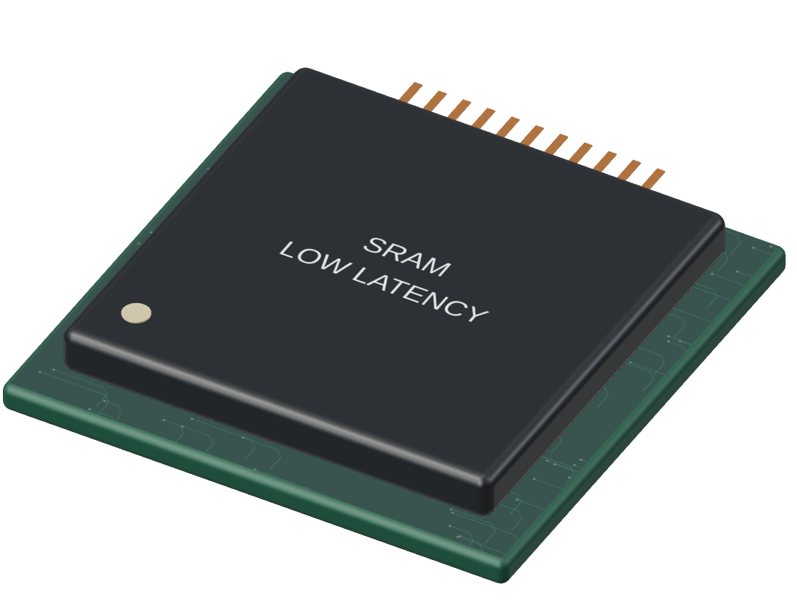
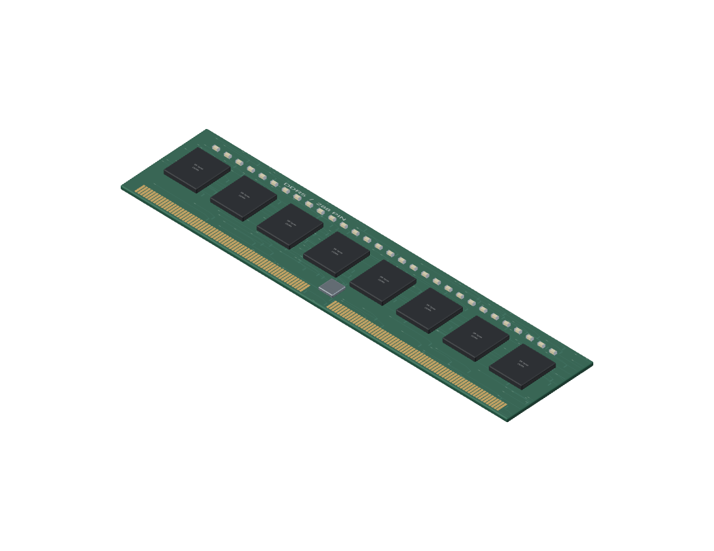
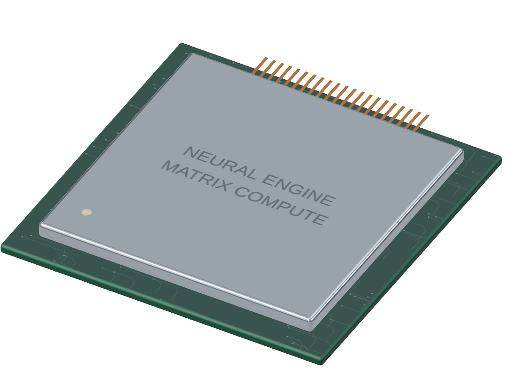
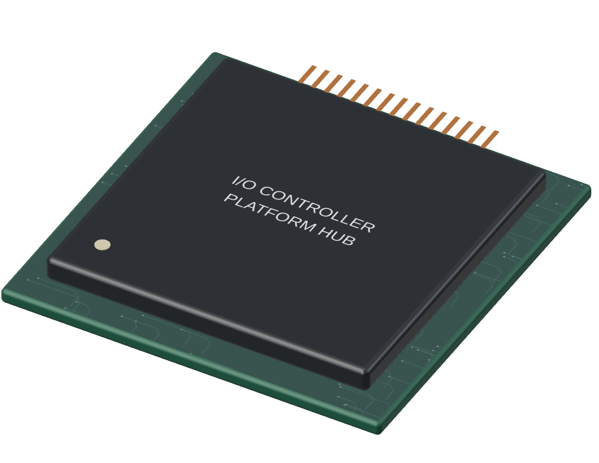
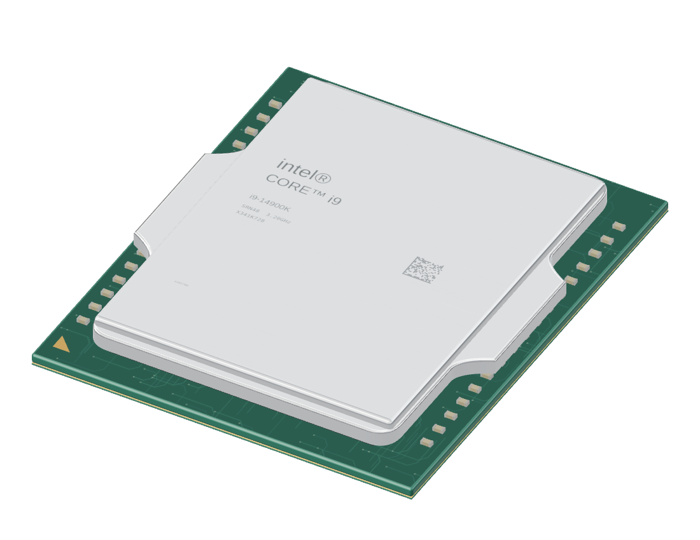

<!doctype html><html lang="ko"><meta charset="utf-8"><meta name="viewport" content="width=device-width,initial-scale=1"><title>관계지도 · 공간 설계 시안</title>
<link rel="stylesheet" href="style.css">
<main class="scene" id="scene">
<button id="back" aria-label="공간으로 돌아가기" hidden><svg viewBox="0 0 24 24" aria-hidden="true"><path d="m6 6 12 12M18 6 6 18"/></svg></button>
<section class="room" aria-label="명령과 메모리 전시 공간">
<div class="architecture" aria-hidden="true"><div class="left-wall"></div><div class="back-wall"></div><div class="right-wall"></div><div class="floor"></div></div>
<button class="exhibit sram" data-part="sram"><span>SRAM</span></button>
<button class="exhibit dram" data-part="dram"><span>DRAM</span></button>
<button class="exhibit npu" data-part="npu"><span>NPU</span></button>
<button class="exhibit coproc" data-part="coproc"><span>보조 프로세서</span></button>
<div class="roomtitle"><h1>명령과 메모리</h1></div>
</section>
<button class="hero" id="hero" aria-label="CPU 역할과 내부 구성 보기"><span class="tag">CPU</span></button>
<div class="concept" aria-label="CPU 내부 구성 개념도"><button data-info="core" class="active">코어 01</button><button data-info="core">코어 02</button><button data-info="core">코어 03</button><button data-info="core">코어 04</button><button data-info="core">코어 05</button><button data-info="core">코어 06</button><button class="cache" data-info="cache">공유 캐시</button><button class="imc" data-info="imc">메모리 컨트롤러</button></div>
<svg class="conduit" viewBox="0 0 550 240" aria-hidden="true"><path d="M85 0V143Q85 160 102 160H410Q427 160 427 143V60"/><path class="flow" d="M85 0V143Q85 160 102 160H410Q427 160 427 143V60"/></svg>
<article class="detail"><h2 id="name">CPU</h2><div class="tabs" role="tablist" aria-label="설명 분류"><button role="tab" data-tab="role" aria-selected="true">역할</button><button role="tab" data-tab="internal" aria-selected="false">내부 구성</button><button role="tab" data-tab="relationships" aria-selected="false">연결 관계</button></div><section class="panel" id="panel" role="tabpanel"></section></article>
<div class="live" aria-live="polite" id="live"></div>
</main>
<script src="preview.js"></script></html>
